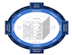

EA Glossary
EA Glossary terms and definitions.
Type EA3, FEAF, 42010 or TOGAF to filter to single source.
Sources
EA3 Cube, Scott Bernard (2012) Introduction to Enterprise Architecture, third edition.
 The Common Approach to Federal Enterprise Architecture, 2012 US Federal Enterprise Architecture Framework (FEAF-II).
TOGAF 9 is an Open Group standard.
Produced by
John Gøtze, EA Fellows